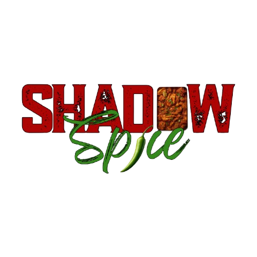
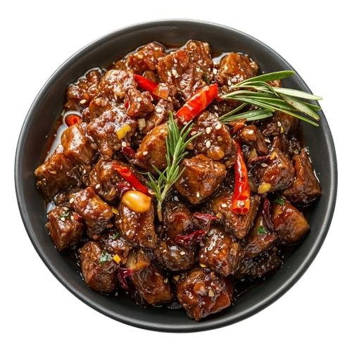
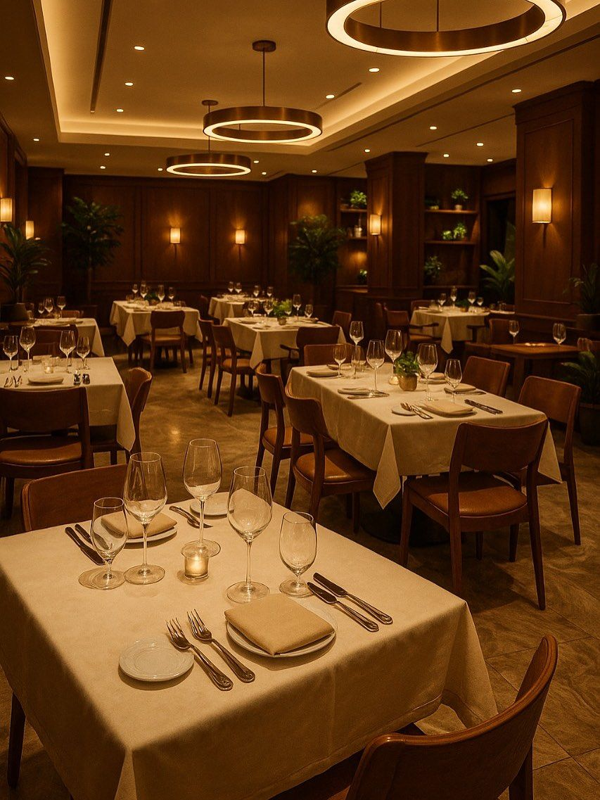
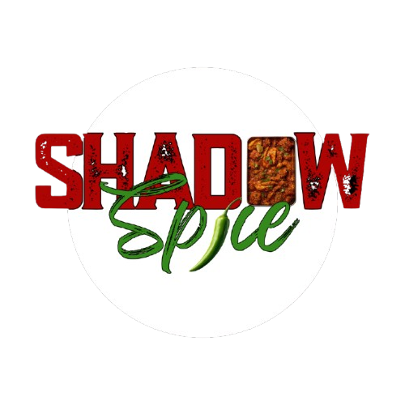

Experience the perfect blend of shadow and spice in every bite. Our dishes are crafted to tantalize your taste buds with bold flavors and a hint of mystery.


Shadow Spice is a culinary journey that blends traditional flavors with a modern twist. Our restaurant offers an immersive dining experience where every dish tells a story of heritage and innovation. we take pride in offering an authentic Pakistani cuisine that is as rich and diverse as our legacy. It has been produced by the fusion of indigenous flavours with culinary heritage from Arabia, Persia and Central Asia as the many tribes, peoples and cultures blended over centuries across the valleys and plains of the Indus.
Our chefs are passionate about using the freshest ingredients and traditional cooking techniques to create dishes that are bursting with flavor. From our signature biryanis to our delectable kebabs, every item on our menu is crafted with care and attention to detail. We invite you to join us at Shadow Spice and experience the perfect blend of shadow and spice in every bite.
